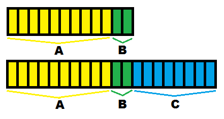

These are explanations about some expressions we can find for certain properties and components in the JSON files:
Time expressions
Along many of the guides you will encounter properties that will have time expressions as their value.
These time expressions are strings representing in-game time, which will be parsed by the code. Examples:
"duration" : "3d"
Stands for 3 days.
"duration" : "40h"
Stands for 40 hours.
"duration" : "15m"
Stands for 15 minutes.
"duration" : "1s"
Stands for 1 second.
"duration": "3d40h15m1s"
Stands for 3 days plus 40 hours, 15 minutes and 1 second.
We can append extra time expressions to these times using "+", like this:
"delay" : "3d+40h"
This means 'choose a random amount of time between "3 days" and "3 days and 40 hours"'. We use this kind of expressions to add more randomness to the game. This way, events and encounters don't need to happen always at the same hour, which also helps with performance, since they're more distributed over time.
There are properties that will define times in a different way, such as:
"time" : "6:00"
to represent 6AM, or
"end_time" : 1200
to represent an amount of realtime milliseconds (notice that this one is not a string).
When editing copied files from the stonehearth mod always make sure you're using the correct type of value for each field.
Loot tables
The chance of getting anything when you kill, harvest or mine something is given by a loot table. Loot tables work based on something called a weight.[1]
The loot_drops component has these fields:
"force_auto_loot": true -- optional field that will mark the drop for auto loot regardless of the auto loot option from the game settings. It will only work if the drops have the correct player_id.
"entries" -- a dictionary of one or more loot table entries (the entry names can be any string). Each entry has the following properties:
"roll_type" : either "each_of" or "some_of". Will default to "some_of" when omitted.
- "each_of" will cause all entries and items below this point to be added to a list to give to the player as loot.
- "some_of" will cause either single or multiple random entries or items listed in the entry to be added to a list to give to the player as loot based on the "num_rolls" value.
"num_rolls" :
- Can be a table with keys "min" and "max"
- Can be a number
- Can be omitted (which will default to 1)
- When the type "each_of" is used, this value applies to all # of drops per item within it.
"items" : dictionary mapping of unique string name (make something up!) to entries with keys "type", "uri", "weight", and "num_rolls".
- "type" can be either "item" or "bag". Defaults to "item" when omitted.
- "item" is a uri for an item (a chair, a bed, a weapon).
- "bag" is a uri for another list of items/bags (another loot_table just like this one).
- If unique string name is "none" or "uri" is an empty string, no drop is created if it is rolled.
- If "weight" is omitted, defaults to 1. Non-integer values are ok.
- "num_rolls": same possible values than explained above.
- "type" can be either "item" or "bag". Defaults to "item" when omitted.
Example from entling.json:
"stonehearth:loot_drops": {
"entries": {
"default": {
"num_rolls": {
"min": 1,
"max": 1
},
"items": {
"ore": {
"uri": "stonehearth:resources:wood:oak_log",
"weight": 10
}
}
}
}
}
Example from goblin_tent.json:
"stonehearth:loot_drops": {
"force_auto_loot": true,
"entries": {
"default": {
"items": {
"skin": {
"uri": "stonehearth:loot_bag:goblin_tent",
"weight": 1,
"type": "bag"
}
}
}
}
}
You can find a longer example inside stonehearth/lib/loot_table/loot_table.lua.
Other files also make use of the loot table syntax even if they're not using the loot_drops component. For example, we can find a field called "resource_loot_table" in small_oak_tree.json, for a chance to drop seeds in addition to the wood:
"stonehearth:resource_node": {
"durability": 6,
"resource": "stonehearth:resources:wood:oak_log",
"resource_loot_table": {
"entries": {
"optional": {
"num_rolls": {
"min": 1,
"max": 1
},
"items": {
"none": {
"uri": "",
"weight": 8
},
"pelt": {
"uri": "stonehearth:trees:oak:seed",
"weight": 1
}
}
}
}
}
}
Weighted sets
We use weighted sets in many of the JSON files. With them we can give more priority or more chances for an entry to be chosen when we draw a random one (for example, choosing a random weather, a random encounter, random loot...).
Weights are a handy way to assign a probability of something without assigning a strict probability. A probability is a value between 0 (never happen) and 1 (always happens). So if you are using probability the numbers in your table have to add up to 1 always. So if you add something new or pull something out, you have to calculate your numbers all over again.[1]
Weights are a bit different! A weight merely states how likely something is relative to something else.
Say you want A to drop 5 times as often as B. B has an arbitrary weight of 2. Therefore A must have a weight of 10, 5 times as much as B. So currently, we have a total weight of 12. 2/12 times we see B and 10/12 times we see A.
What if we want to add item C with a weight of 8 (4 times as common as B)? Now we have a total weight of 20, giving 10/20 times we'll see A, 2/20 times we'll see B and 8/20 times we'll see C. The relative chance of each item dropping is preserved, but the chance of A and B dropping is now less than it was before. This is important.[1]

Check the numbers in the file you're mixinto'ing to before adjusting this weight. If your number is too low, your item will not drop much (if at all). If your number is too high, it will outweight every other item and nothing else will drop!
References
[1]: From https://discourse.stonehearth.net/t/tutorial-adding-mining-resources-updated-for-alpha-18/16994